Angew. Chem. Int. Ed. Engl. Vol 28, No. 2, 218-220 (1989)
HTML and images by Cherriebaby
Metal borohydrides MBH4 (M = Li, Na, 1/2 Ca, 1/2 Zn) are amongst the most important reducing agents in organic chemistry.[1,2] Their reactivity is strongly influenced by the following factors: a) the solvent,[2] b) the metal ion M,[2] and c) the presence of catalysts such as B(OMe)3,[3] β-methoxy-9-borabicyclononane,[3] or halides[4,5] of cobalt, nickel, indium, osmium, copper, platinum and titanium. Despite the variation of these parameters, the range of functional groups that can be reduced by metal borohydrides is very limited. We now report a method which makes it possible also to reduce amino acids, carboxylic acids, amides, nitrites, nitroalkenes, and sulfoxides with alkali metal borohydrides in good yields.
We found that the addition of Me3SiCl makes possible the reduction of α-amino acids with LiBH4 in THF (Nos. 1-4 in Table 1). When optically pure α-amino acids were used, optically pure (β-amino alcohols were obtained. This inspired us to investigate the use of LiBH4/Me3SiCl as a reducing agent for other functional groups. Thus, simple carboxylic acids are reduced to alcohols (No. 5), while primary, secondary and tertiary amides (Nos. 6-8) and nitriles (Nos. 10-12) afford the corresponding amines. High yields were obtained in all cases. Dimethyl sulfoxide was reduced to dimethyl sulfide (No. 9), the dipeptide derivative Fmoc-L-Phe-L-Ala-OMe (No. 14) gave the corresponding amino alcohol, and N-benzyloxycarbonyl-6-ammo-1-hexanol was converted into 6-amino-1-hexanol (No. 15). Similar results were obtained with NaBH4 (Nos. 6, 8, 9, 11, 12, 14 and 15 in Table 1). Because of its good solubility in THF and the milder reaction conditions, LiBH4[6] is, however, the reducing agent of choice.
The strength of this new system is demonstrated by the smooth reduction of the nitrostyrene derivative (No, 13) on a preparative scale (100 mmol) to afford the corresponding amine. Other methods for the reduction of conjugated nitroalkenes, such as LiAlH4 reduction or catalytic hydrogenation, are unsatisfactory; far better results have been obtained using diborane in the presence of NaBH4[7] or BF3-OEt2.[8]
We suggest that in reductions using LiBH4(NaBH4)/ Me3SiCl in THF, a borane THF complex is formed [Eq. (a)] which, with the assistance of excess Me3SiCl, acts as the reducing agent.
LiBH4 + Me3SiCl + THF → LiCl + Me3SiH + BH3·THF ( eq. a)
The addition of Me3SiCl makes it possible to carry out reductions with LiBH4 or NaBH4 which are either very slow or do not occur in its absence. The reaction mechanism, the use of other alkylhalogenosilanes,[9] and the suitability of the method for other functional groups remain to be investigated.
Table 1. Reductions with LiBH4(NaBH4)/Me3SiCl.
| No. | Starting Material | Product [a] |
Method [b] |
Yield [%] |
| 1 | 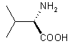 | 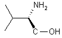 | A | 91 |
| 2 | 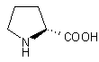 | 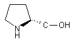 | A | 88 |
| 3 | 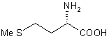 | 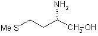 | A | 94 |
| 4 | 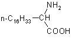 | 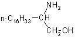 | A | 85 |
| 5 | Ph-COOH | Ph-CH2-OH | A | 92 |
| 6 | Ph-CO-NH2 | Ph-CH2-NH2 | A B |
91 89 |
| 7 | 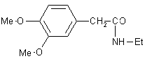 | 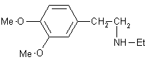 | A | 90 |
| 8 | HCO-NMe2 | Me3N | A B |
72[c] 71 |
| 9 | Me-SO-Me | Me-S-Me | B | 60 |
| 10 | Ph-CN | Ph-CH2-NH2 | A | 90 |
| 11 | 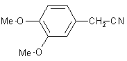 | 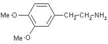 | B | 90 |
| 12 | Me-CH | Me-CH2-NH2 | A B |
75[c] 70 |
| 13 | 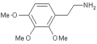 | A | 91 | |
| 14 | 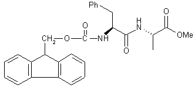 | 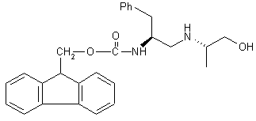 | A[a] B |
60 55 |
| 15 | Ph-CH2-O-CO-NH-(-CH2-)6-OH | H2N-(-CH2-)6-OH | A B |
95 88 |
[a] All new compounds gave satisfactory C,H analyses and appropriate spectra,
[b] A: LiBH4 as reducing agent; B: NaBH4 as reducing agent,
[c] isolated as the hydrochloride.
[d] Purified by flash chromatography (silica gel, chloroform/methanol).
Me3SiH is formed in all reactions. It should therefore be ensured that this volatile silane (b.p.~ 10°C) can escape from the reaction vessel.[10]
Reaction 1 in Table 1; A solution of Me3SiCl (8.64 g, 80 mmol) was added under argon to a solution of LiBH4 (0.87 g, 40 mmol) in THF (20 mL) over the course of 2 min. A precipitate of LiCl formed. L-valine (2.34 g, 20 mmol) was added portionwise to the mixture within 5 min. After stirring for 24 h at room temperature, 30 mL of MeOH were cautiously added and the volatiles removed by distillation. The residue was treated with 20% KOH solution and extracted three times with 50 mL portions of CH2Cl2. The organic phases were combined, dried over Na2SO4 and the solvent evaporated to afford L-valinol which was spectroscopically pure (1H NMR). Yield after Kugelrohr distillation 1.87 g (91%), [a]24D = +14.7 (neat).
Reaction 11 in Table 1: NaBH4 (4.56g, 120 mmol) was added to a solution of Me3SiCl (26.04 g, 240 mmol) in THF (100 mL) and the mixture refluxed for 3 h under argon. A solution of 3,4-dimethoxybenzylcyanide (10 g, 56.4 mmol) in THF (50 mL) was then added over the course of 10 min. The solution was refluxed for a further 10 h. After cooling, 100 mL MeOH were cautiously added and the volatiles removed in vacuo. The residue was taken up in dilute HC1 and washed with ether. The aqueous solution was treated with excess dilute NaOH and then repeatedly extracted with CH2Cl2. The organic extracts were combined, dried over Na2SO4, and the solvent evaporated to afford 2-(3,4-dimethoxyphenyl)ethylamine (pure by 1H NMR). Yield after kugelrohr distillation 9.16 g (90%).
CAS Registry numbers:
PhCN, 100-47-0; MeCN, 75-05-8; Me2S, 75-18-3; ClTMS, 75-77-4; LiBH4, 16949-15-8; NaBH4, 16940-66-2; Me2SO, 67-68-5; Me3N, 75-50-3; EtNH2, 75-04-7; PhCO2H, 65-85-0; PhCONH2, 55-21-0; Me2NCHO, 68-12-2; PhCH2OH, 100-51-6; PhCH2NH2 100-46-9: Mc3N-HCl, 593-81-7; EtNH2-HCl, 557-66-4; HO(CH2)6NH2, 4048-33-3; HO(CH2)6NHCO2CH2Ph, 17996-12-2; CH3(CH2)15CH(NH2)CO2H, 2187-07-7; (L)-i-PrCH(NH2)CO2H, 72-18-4; (S)-i-PrCH(NH2)CH2OH, 2026-48-4; 3,4-(MeO)2C6H3CH2CN, 93-17-4; (L)-MeS(CH2)2CH(NH2)CO2H, 63-68-3; CH3(CH2)15CH(NH2)CH2OH, 23356-96-9; (S)-MeS(CH2)2CH(NH2)CH2OH, 2899-37-8; 3,4-(MeO)2C6H3(CH2)2NH2, 120-20-7; 3,4-(MeO)2C6H3CH2CONHEt, 118474-93-4; 2,3,4-(MeO)2C6H2(CH2)2NH2, 3937-16-4; 3,4-(MeO)2C6H3(CH2)2NHEt, 39792-99-9; (E)-2,3,4-(MeO)3C6H2CH=CHNO2, 118474-94-5; methyl [N-(9 H-fluoren-q-ylmethyloxycarbonyl)phenylalanyl]alanine, 118474-95-6; 9 H-fluoren-q-yl-methyl 1-(1-hydroxy-2-propylamino)-3-phenyl-2-propylcarbamate, 118474-96-7; (L)-Proline, 147-85-3; (L)-Prolinol, 23356-96-9.